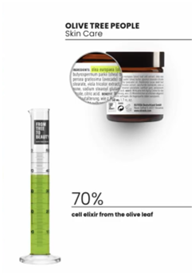
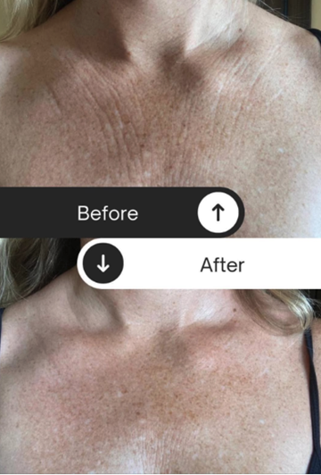
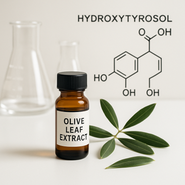
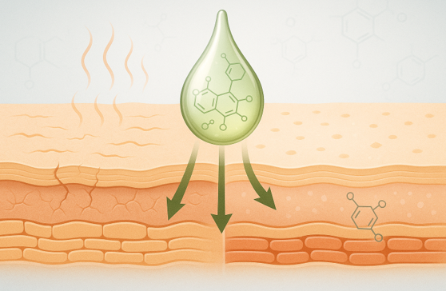
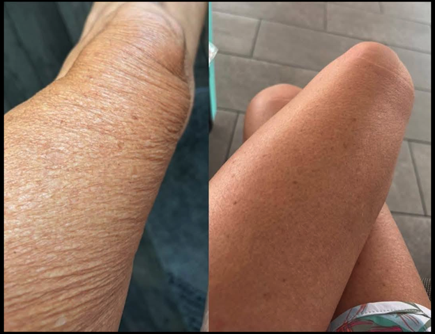

One Moisturizer, Skin Changing Results: Waterless formula + Olive leaf
extract is what women prefer for moisturizing their skin.
PR Newswire said "168.6 million women in the U.S. are realizing the difference
between conventional clean beauty and waterless beauty, and fewer
and fewer of the 168.6 million women in the U.S. are willing to
spend money on up to 95% fillers, without achieving lasting
results."
The ingredient that helps Mediterranean women age beautifully… is
finally inside a body cream that works. In regions like Sardinia and
Ikaria, people live longer, age slower, and somehow manage to keep
their skin looking radiant well into their 80s. Their secret? A
compound called hydroxytyrosol, found in olive leaves. We infused that
same antioxidant-rich olive leaf extract into our B15 Anti-Aging Body
Cream, replacing the 70% water found in most creams with real, active
ingredients your skin actually needs.The result? A rich, plant-powered
formula that helps restore your skin’s moisture barrier and visibly
smooth out dryness, crepiness, and fine lines.
Here are 10 reasons why women are making this choice:
1. Blue Zones Back It Up: Olive-Based Skin Care Just Makes Sense
At Oliveda, we’ve always believed in the power of olive-based
compounds to support skin health. But when you look at places like
Ikaria and Sardinia — known as Blue Zones — it’s easy to see we’re
on the right track. These are regions where people routinely live
into their 90s and 100s, with strong bodies, clear minds… and skin
that honestly looks incredible for their age. Their diets are rich
in olive oil, which contains hydroxytyrosol — one of the most
powerful natural antioxidants on the planet. It’s known to fight
inflammation, oxidative stress, and signs of aging throughout the
body.
Our B15 Anti-Aging Body Cream is made with olive leaf extract, not
just olive oil — and that means it delivers up to 40x more
hydroxytyrosol in every application. If this ingredient plays a
role in keeping people feeling and looking youthful from the
inside out… It makes perfect sense to use it on your skin too.

2. We Replaced 70% Water With 70% Olive Leaf Extract
Most body creams?.... They’re mostly water — and your skin can
feel the difference. That’s exactly what our founder, Thomas
Lommel discovered when he first started researching how skincare
was really made.
"Every skin care product that shows the word ‘aqua’ first on the
ingredients list is usually about 70% water,” he explained.
“That leaves barely any room for real, active ingredients — just
cheap fillers and oils with long shelf lives that do very little
for your skin."
That realization led us to do something radically different.
Instead of 70% water, our B15 Anti-Aging Body Cream is made with
70% olive leaf extract — a rich botanical compound naturally
loaded with hydroxytyrosol, a powerful antioxidant that supports
hydration, skin renewal, and protection.
No dilution. No waste. Just ingredients your skin can actually
use.
If your moisturizer disappears an hour after applying, it's
because it's mostly water — and B15 is your fix.

3. Soothes Inflammation You Can Feel — and See
That dry, tight, crepey feeling? It’s not just dryness — it’s
inflammation.
As we age, our skin becomes more sensitive to stress, sun, and
hormonal changes. That triggers low-level inflammation, which
slowly breaks down things like collagen and elastin — the building
blocks of firm, healthy skin. Over time, the skin barrier weakens…
and your skin starts to feel uncomfortable all the time.
That’s why B15 works so well.
The olive leaf extract we use is rich in hydroxytyrosol, a
powerful natural anti-inflammatory. It calms irritation, supports
barrier repair, and helps your skin feel comfortable again — not
tight, itchy, or stressed. It’s not just something you feel — it’s
something you can see. That inflamed, papery look softens. Skin
looks smoother. More at ease.
It’s the kind of soothing that actually lasts.

4. Backed by Science — Not Hype
Let’s be honest: most skincare brands rely on flashy marketing,
big promises, and paid influencers to sell products that barely do
anything.
At Oliveda, we do things differently.
Our B15 Anti-Aging Body Cream is powered by hydroxytyrosol — a
compound backed by science for its ability to rebuild and restore
ceramides, the natural lipids that make up nearly 50% of your
skin’s moisture barrier.As you age, your ceramide levels drop.
Your skin gets drier, thinner, and starts to look crepey. But
hydroxytyrosol actually helps your body create more of these vital
components — which means deeper hydration, less inflammation, and
a healthier, more youthful glow.
No gimmicks. No guessing. Just real ingredients doing what they’re
proven to do.
5. Ethical, Sustainable, and Rooted in Real Purpose
We believe that true beauty doesn’t come at the planet’s expense.
At Oliveda, our approach to skincare is deeply holistic — not just
in what we put into our products, but in how we protect where
those ingredients come from.
We source our olive leaf extract from century-old, wild mountain
olive trees in the Mediterranean. These trees aren’t just
beautiful — they’re vital. They help produce oxygen, prevent soil
erosion, and support local biodiversity. That’s why we dedicate
resources to preserve and cultivate the land they grow on, earning
full eco-certification for sustainability.
The very trees that give us hydroxytyrosol — the powerful
antioxidant at the heart of B15 — have been thriving for thousands
of years. And we treat that as both a gift and a responsibility.
This isn’t just skincare. It’s a return to something more
grounded, more respectful… and more powerful than anything
synthetic can offer.

6. Rebuilds Your Skin’s Natural Barrier
The real secret to youthful skin isn’t about adding more layers —
it’s about restoring what time has taken away.As we age, our
skin’s natural barrier — the one that keeps moisture in and damage
out — starts to weaken. That’s when you start noticing dryness,
tightness, and crepey texture. Most products try to fix the
symptoms… but never deal with the root cause.
That’s why we made B15 different.
The star ingredient, hydroxytyrosol, helps rebuild your skin’s
protective barrier by reducing inflammation, shielding against
oxidative stress, and boosting the production of ceramides — the
lipids that make up nearly half your skin’s moisture barrier.It
doesn’t just feel good. It actually makes your skin stronger, more
resilient, and better protected.
In a world full of stress, sun, and pollution… your skin deserves
defense that goes deeper.
7. A Brand with a Face — and a Mission
How often do you see the founder of a skincare company out front,
leading the charge himself? At Oliveda, this isn’t just business —
it’s personal.Our founder, Thomas Lommel, has made it his life’s
mission to share the healing power of the olive tree with the
world. He doesn’t hide behind a boardroom — he’s out hosting
wellness events, walking people through olive groves, and showing
firsthand how powerful a holistic lifestyle rooted in nature can
be. Thomas isn’t just passionate about skincare — he’s committed
to helping people connect more deeply with their health, their
skin, and the natural world.
When you use B15, you’re not just buying a product. You’re joining
a movement led by someone who genuinely lives the values behind
every bottle.
8. Try It for a Full Year — Risk-Free
We know how hard it is to trust another skincare product —
especially if you’ve been burned by promises that didn’t
deliver.That’s why at Oliveda, we don’t just say B15 works — we
back it with a 365-day guarantee.
You have a full year to try it, use it, and see what it does for
your skin. And if for any reason it’s not for you? Just send it
back. No stress. No questions.We offer this because we believe in
what we make — and because our customers deserve real results, not
hype.
This isn’t about quick fixes or trendy marketing. It’s about
powerful, natural ingredients that give your skin what it actually
needs — and the peace of mind to try it without pressure.
9. Born from a Personal Healing Journey
Oliveda didn’t start as a business idea — it started with a health
crisis.
Years ago, our founder Thomas Lommel was facing serious,
life-threatening health problems. Traditional treatments weren’t
helping. So he turned to the one thing he’d always felt drawn to —
the olive tree.He fully immersed himself in olive-based rituals —
using olive oil inside and out, nourishing his body and skin. And
what happened next changed everything.
The transformation was so profound, Thomas made it his life’s work
to study the healing properties of the olive tree and bring them
to others — through pure, powerful, plant-based skincare.That
passion lives in every bottle of B15. This isn’t just a formula.
It’s the result of one man’s mission to share the wellness and
strength he found… rooted in nature.

10. Just Twice a Day for Real Results
You don’t need a 10-step routine to transform your skin — you just
need the right formula, used the right way.With B15, the best
results come from applying it morning and night. That’s it.
Right after your shower — when your skin is warm and slightly damp
— is the perfect time. That’s when your skin is most absorbent,
and B15’s active ingredients can go deeper to hydrate, repair, and
support your moisture barrier.Use it again before bed, and you’ll
give your skin exactly what it needs to protect during the day and
renew at night.It’s simple, effective, and easy to stick with —
because great skin doesn’t have to be complicated.